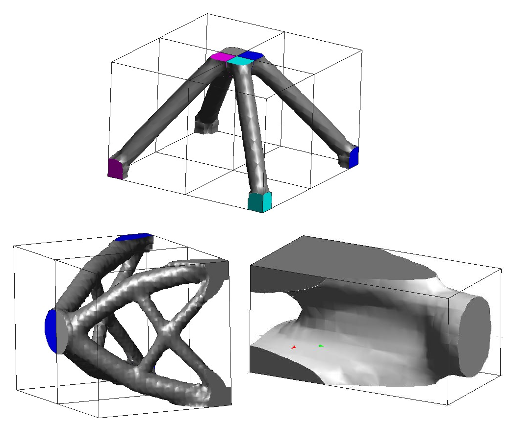

Material design
Swan can perform analyses of microstructures: when combining it with its topology optimization capabilities,
novel metamaterials can be designed in order to tackle complex
challenges and further push the boundaries of engineering.
Structural design
The modular design of Swan allows the combination of several functionals in order
to define complex optimization problems. Among the functionals that can be used as constraints are compliance, volume,
and perimeter. Swan also features density-based optimizers like Projected Gradient, MMA and IPOPT,
as well as level-set methods such as SLERP, Projected SLERP and Hamilton-Jacobi.
Multi-scale
One of the key features that sets Swan apart from other topology optimization
toolboxes is the ability to design optimal materials at the micro scale, and reuse
the obtained results to perform analyses at the macro level.
Multiphysics, and much more
We are constantly looking ahead and recruiting new contributors in order to keep
expanding Swan's capabilities. Among the planned upcoming features are multiphysics,
3D microstructural optimization, and many more.

Optimization of the 3D cantilever benchmark